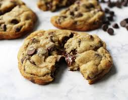

Chocolate Chip Cookies

Gooey Chocolate Chip Cookies
A step by step on how to make the most decadent chocolate chip cookies you'll ever indulge in!
Ingredients
- 1 cup of cold butter
- 1 cup of brown sugar, packed.
- 1 cup of sugar
- 2 large eggs
- 2 teaspoons of vanilla
- 2 cups of flour
- 1 teaspoon of baking powder
- 1 teaspoon of salt
- 2 cups of chocolate chips
Steps
- Preheat oven to 400 degrees (if not chilling the dough). Check your oven temperature using an oven thermometer since some ovens run hot. If you suspect your oven runs hot, preheat oven to 385 degrees. In a large mixing bowl, cream butter, brown sugar, and sugar for 4 minutes until light and fluffy.
- Add eggs and vanilla. Mix for 1 minute longer.
- Stir in flour, cornstarch, baking soda, and salt. Mix just until combined. Fold in chocolate chips.
- If time permits, wrap the dough tightly in plastic wrap and chill for 24 hours. If not, scoop cookie dough onto baking sheets. I suggest using parchment paper or Silpat silicone baking sheets on light-colored baking sheets. If you using dark colored baking sheets, the bottoms of the cookies may brown quickly and can burn. I suggest using light-colored cookie sheets.
- Bake for 8-11 minutes or until the edges just begin to turn a light golden color. Remove from oven and let set for 5 minutes before removing from the cookie sheet.